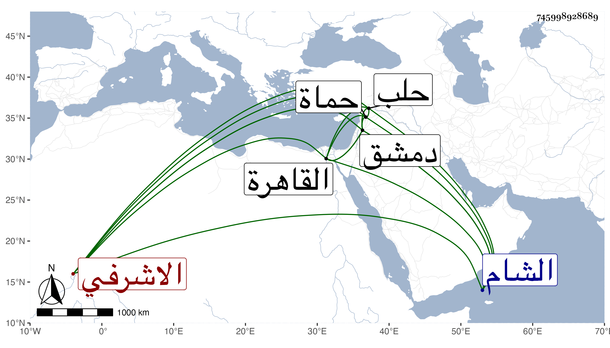

0902Sakhawi.DawLamic.ITO20230111-ara1.EIS1600.745998928689
Biography ID: 745998928689
198
جار قطلي وهو على ألسن العامة بالشين المعجمة بدل الجيم سيف الدين الاشرفي من عتقاء الظاهر برقوق نائب الشام . تنقل في الخدم إلى أن ولي نيابة حماة في الدولة المؤيدية . ثم نقله الاشرف لنيابة حلب عوضا عن تاني بك البجاسي فكان دخوله لها في شوال سنة ست وعشرين ثم نقل إلى القاهرة فأمر تقدمة ثم عمل أتابكا ثم نائب دمشق في سنة خمس وثلاثين بعد سودون من عبد الرحمن ومات بها بعد سنة في ليلة الاثنين تاسع عشر رجب سنة سبع وثلاثين ، قال شيخنا في أنبائه وكان شهما مسرفا على نفسه يحب العدل والانصاف ولم يخلف ولدا ، وذكره ابن خطيب الناصرية فقال انه كان أميرا كبيرا شجاعا مشكور الأيام بدمشق مع حدة يبادر بها إلى سفك الدماء .
